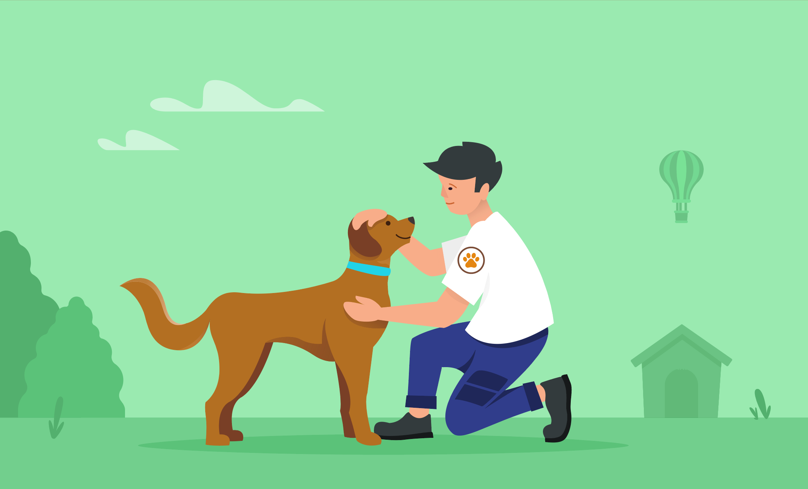
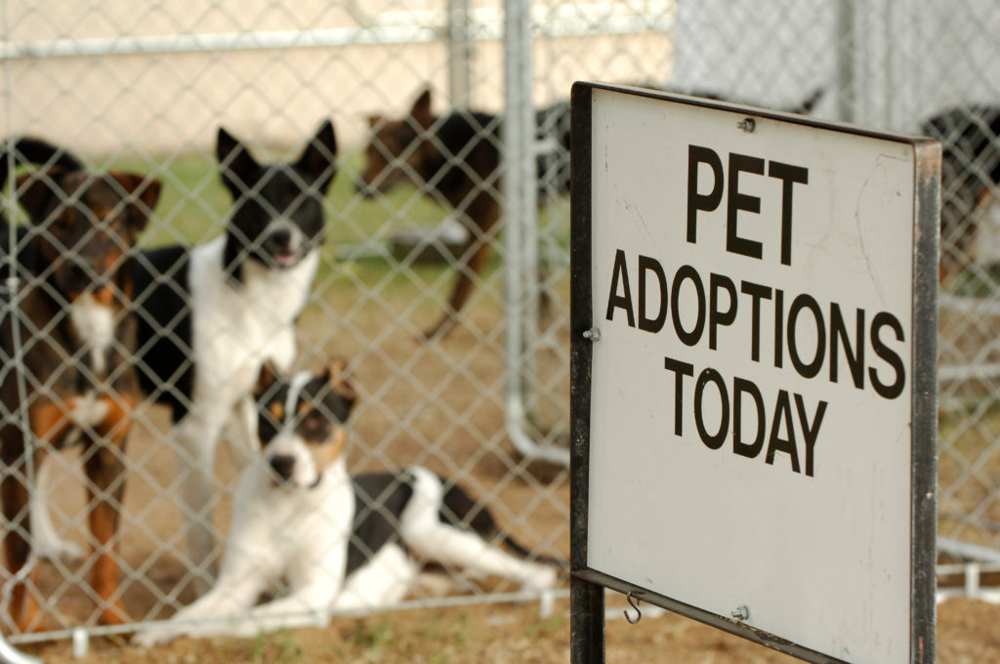
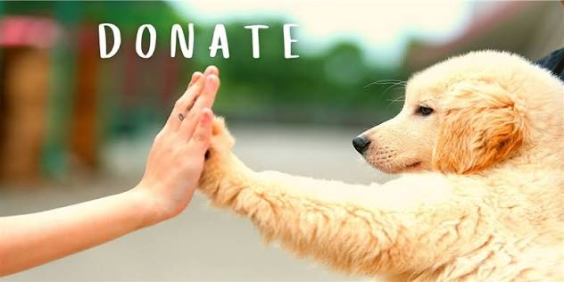

Animal Rescue
We rescue abandoned, injured and neglected animals and provide immediate care.
Giving Every Animal a Second Chance
Animals In Need (AIN) is a non-profit organization dedicated to rescuing abandoned animals throughout Trinidad and Tobago. We provide shelter, medical care and help every animal find a safe and loving home.

We rescue abandoned, injured and neglected animals and provide immediate care.

Healthy animals are prepared for adoption and matched with caring families who can provide a safe and loving home.

We accept food, medical supplies, leashes, toys and monetary donations to help care for rescued animals.
Status: Ready for Adoption

Status: Ready for Adoption

Status: Not Ready for Adoption